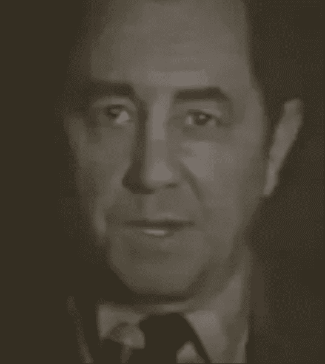

A história de Poppy Playtime é uma série episódica de survival horror ambientada na fictícia Playtime Co., uma fábrica de brinquedos abandonada onde o jogador, um ex-funcionário anônimo, investiga o desaparecimento misterioso de toda a equipe em 1995. A narrativa é desvendada através de fitas VHS, gravações e interações, revelando que a empresa realizava experimentos antiéticos na Iniciativa de Corpos Maiores (Bigger Bodies Initiative), transformando órfãos em brinquedos monstruosos e hostis, como Huggy Wuggy, Mommy Long Legs e CatNap. A saga principal, desenvolvida pela Mob Entertainment, segue o protagonista através de cinco capítulos lançados entre 2021 e 2026, onde ele deve usar o gadget GrabPack para resolver quebra-cabeças e escapar das perseguições. A trama começa em 2005, quando o jogador recebe um convite para retornar à fábrica, descobrindo que a boneca Poppy, que parecia ser a chave para a fuga, na verdade possui motivações ambíguas e manipuladoras, redirecionando o jogador para o orfanato Playcare e depois para as prisões subterrâneas. O clímax da história, atingido no Capítulo 5: Broken Things (lançado em 18 de fevereiro de 2026), revela os segredos finais sobre a origem dos monstros e a figura do Protótipo (1006), um experimento anterior que busca liberdade e controla os brinquedos. A franquia explora temas de trauma infantil, horror corporativo e a falência ética da Playtime Co., consolidando-se como um fenômeno cultural do gênero "mascot horror"

A história de Five Nights at Freddy's gira em torno da Fazbear Entertainment, uma empresa fundada por Henry Emily e o serial killer William Afton, que começou com o restaurante Fredbear's Family Diner antes de expandir para a cadeia Freddy Fazbear's Pizza em 1983. William Afton, escondendo-se atrás do traje de Spring Bonnie, assassina várias crianças, incluindo a filha de Henry, Charlotte (Charlie), e seu próprio filho mais novo, Evan (Criança Chorona), cujas almas acabam possuíndo os animatrônicos através de uma substância paranormal chamada Remanescente. Essas mortes levam a uma série de incidentes trágicos, como a Mordida de '87 e a Mordida de '83, enquanto William tenta alcançar a imortalidade criando animatrônicos assassinos, resultando na morte acidental de sua própria filha, Elizabeth, pela Circus Baby. Ao longo dos anos, a narrativa revela que Michael Afton (filho mais velho de William) tenta redimir-se, mas acaba sendo morto e usado como "traje" pelo animatrônico Ennard, enquanto William é aprisionado no traje de Springtrap por décadas. A saga culmina com Henry tentando libertar as almas queimando todos os animatrônicos em uma pizzaria falsa, mas o espírito vingativo Cassidy (Golden Freddy) tortura William eternamente, que posteriormente retorna como uma entidade digital malévola chamada Glitchtrap para corromper a tecnologia moderna e causar caos no Freddy Fazbear's Mega Pizzaplex.